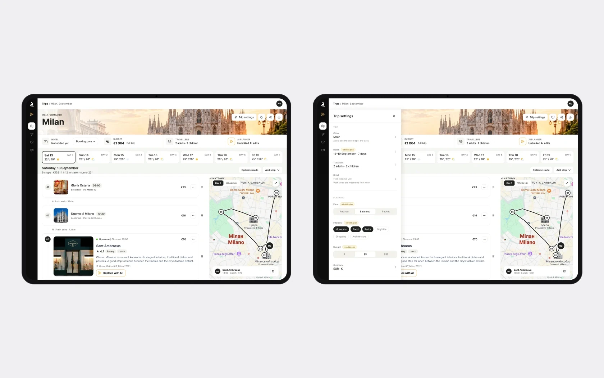
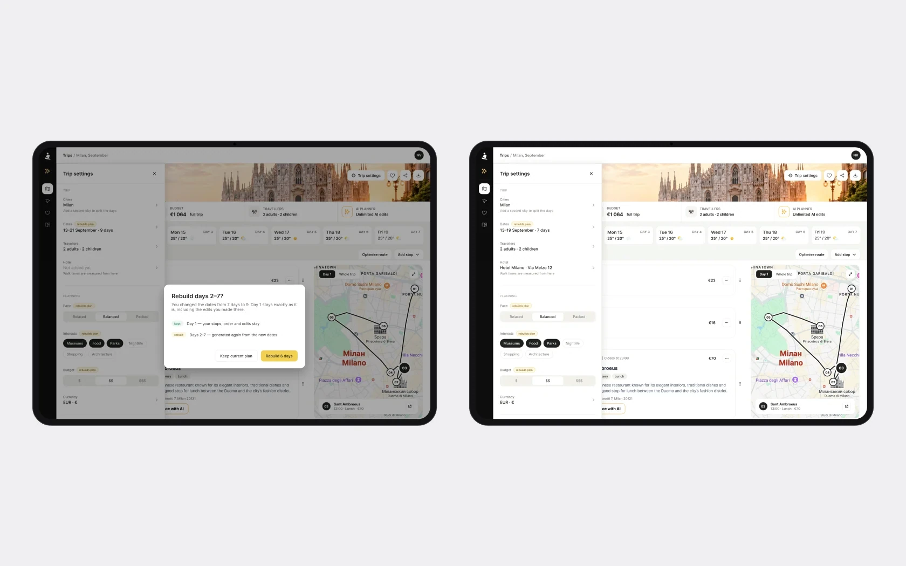
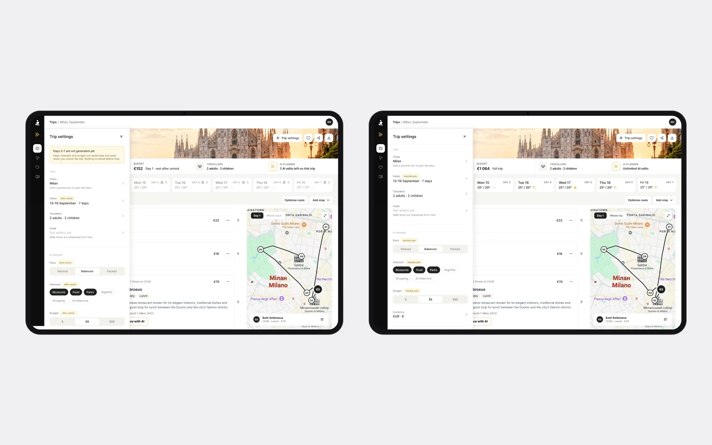

Планувальник, який бере гроші за трип: день 1 безкоштовно, дні 2–7 – після розблокування
Замовник просив редизайн Plan Page – головного екрана після генерації трипу: дні, місця, час, бюджет, готелі, карта й редагування. Домовилися не починати з UI: спершу дискавері.
Головне обмеження поставила розробка: дні 2–7 генеруються тільки після оплати, щоб економити токени. Тож жодна правка не може змусити продукт генерувати більше, ніж зараз.
Що показали аналітика, конкуренти й аудит
В Amplitude я розібрала 14 типів подій, з них 6 кастомних: покупки й продуктовий тур на девʼять кроків на згенерованому плані. Порівняла Wanderlog і Mindtrip, а також Stippl, Roadtrippers і Tripadvisor Trips, провела перевірку доступності й евристичний аудит і зібрала все в карту проблем і план змін – 11 розділів у Notion.
На зустрічі з замовником підтвердили пʼять проблем:
- банер Booking лишається після додавання готелю;
- доданий готель показаний порожньою карткою в кожному дні;
- на мобільному кнопка підтримки перекриває вікно оплати;
- згорнуті дні виглядають як голий список без підсумків;
- Booking отримує 2 гостей замість 4.
Домовилися, що цей етап – UX-правки на наявному дизайні. Редизайн буде окремо й перевикористає ті самі елементи.
Розблокування показує, що ти отримаєш, – і нічого зайвого не генерується
- Чому
- До оплати днів 2–7 ще не існує: вони генеруються лише після розблокування. Екран має пояснити це без генерації превʼю.
- Що зробила
- Чотири стани. Locked: день 1 відкритий, дні 2–7 позначені як ще не згенеровані. Оплата. Generating: дні приходять по черзі, а день 1 лишається редагованим. Unlocked: замків немає, AI безлімітний, бюджет усієї подорожі.
- Результат
- Людина бачить, що дає розблокування і що буде після оплати, а продукт генерує рівно стільки, скільки й раніше.
СтатусМакети для десктопу й мобільного.


Налаштування трипу, які можна знайти й змінити
- Чому
- Після генерації налаштування трипу ніде не редагувалися – тож шукати їх не мало сенсу.
- Що зробила
- Підписана кнопка в шапці, а не іконка. Панель 400 px справа поверх карти, щоб план лишався видимим і редагованим – саме він змінюється від зміни дат чи складу групи. Поля поділені на ті, що застосовуються одразу, і ті, що перезбирають дні.
- Результат
- Налаштування за один клік, і видно, яка зміна перезбирає план.
СтатусМакети.

Зміна дат ніколи не перегенеровує мовчки
- Чому
- Нові дати перезбирають дні 2–7, а економія токенів – жорстке обмеження, тож мовчазної перегенерації бути не може.
- Що зробила
- Діалог підтвердження прямо називає, що лишається, а що перезбирається. Коли готель доданий, банер Booking зникає, а час ходьби перераховується від готелю – це обіцянка з їхньої сторінки тарифів.
- Результат
- Людина знає, що втратить, ще до зміни дат, а банер готелю більше не лишається після його додавання.
СтатусМакети.

Налаштування до розблокування і правильна кількість гостей
- Чому
- До розблокування днів 2–7 не існує, тож налаштування для них нічого не можуть перезібрати. А Booking отримував 2 гостей замість 4.
- Що зробила
- Темп, інтереси й бюджет зберігаються до розблокування з позначкою «after unlock» замість «rebuilds plan». Спільний доступ входить у тариф Single trip, а склад групи – в тій самій панелі, звідти Booking і бере кількість гостей. Готель задається адресою з посиланням, бо власного інвентаря готелів у продукту немає.
- Результат
- Налаштування працюють до розблокування нічого не генеруючи, а Booking отримує реальний склад групи.
СтатусМакети.

- 01
Економія токенів – жорстке обмеження проєкту: жодна рекомендація не може змушувати продукт генерувати більше, ніж зараз.
- 02
Цей етап – UX-правки на наявному дизайні. Редизайн Plan Page буде окремо й перевикористає ті самі елементи, тож правки не пропадуть.
- 03
Далі – тест на людині, яка вперше відкриває продукт, і повідомлення в бот підтримки як ще одне джерело болів.